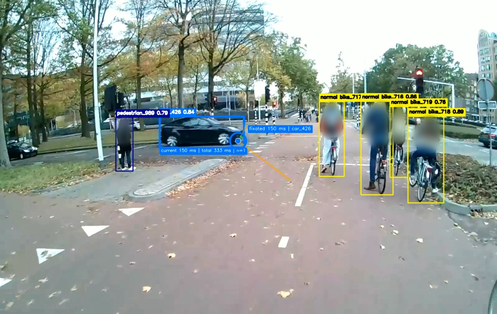

Computer VisionEye Tracking
Experience Lab: Eye Tracking & Object Detection
A working end-to-end workflow that detects and automatically annotates traffic objects in cycling footage, then connects them with gaze and fixation data to support behavioural research.
View case study →